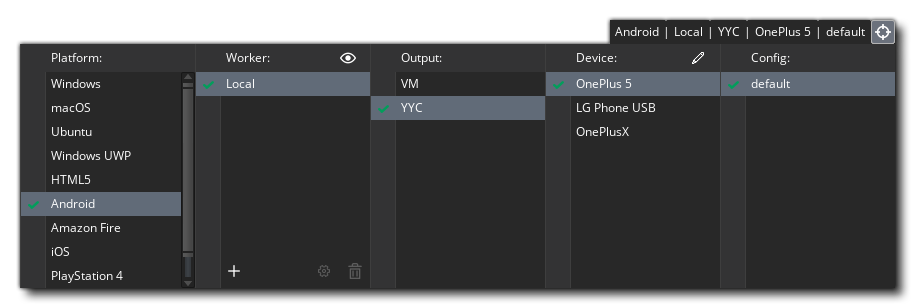
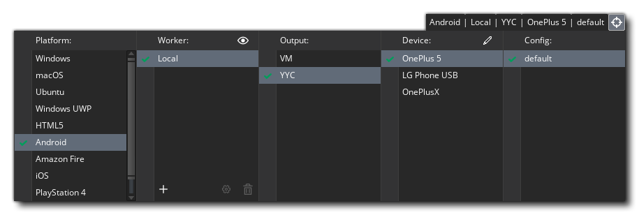
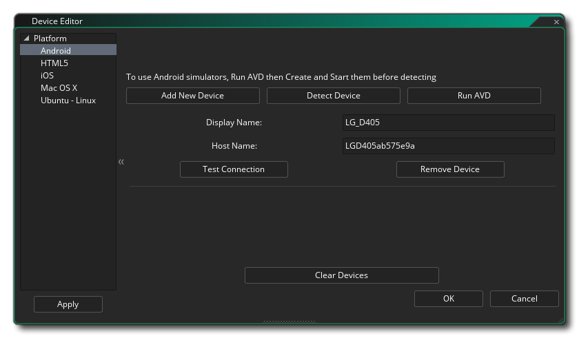
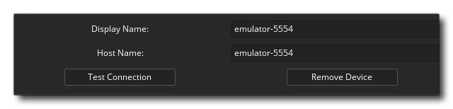

Der Geräte-Manager wird durch Klicken auf aufgerufen  auf dem Bleistiftknopf
auf dem Bleistiftknopf  innerhalb der Zielliste: 
innerhalb der Zielliste: 
Wenn Sie auf diese Schaltfläche klicken, wird der Geräte-Manager geöffnet, in dem Sie verschiedene Geräte für die Zielplattformen konfigurieren können, die Sie kompilieren und testen möchten (beachten Sie, dass die verfügbaren Plattformen von der Lizenz abhängig sind und nicht alle sichtbar sind). Im Folgenden finden Sie Details zum Konfigurieren von Geräten für jede der Zielplattformen:

Hier können Sie auf die Schaltfläche Neues Gerät hinzufügen klicken, um ein neues Android Gerät manuell zur Liste hinzuzufügen, oder Sie können auf die Schaltfläche Gerät erkennen klicken, damit GameMaker Studio 2 automatisch alle Geräte erkennt, die über eine Kabelverbindung verbunden sind. Sie können auch ein virtuelles Android Gerät einrichten, indem Sie auf die Schaltfläche Run AVD klicken. Dies öffnet den Android Virtual Device Manager, wo Sie einen neuen AVD erstellen können (siehe hier für weitere Informationen). Sobald Sie einen erstellt haben, müssen Sie ihn über den AVD-Manager starten. Klicken Sie anschließend in GameMaker Studio 2 auf die Schaltfläche " Gerät erkennen". Sie sollte automatisch zur Geräteliste hinzugefügt werden: 
Sobald Sie ein Gerät hinzugefügt haben, können Sie die Verbindung über die Schaltfläche Verbindung testen überprüfen oder durch erneutes Klicken auf die Schaltfläche Gerät entfernen aus der Liste entfernen.
Der HTML5-Gerätemanager dient zum Hinzufügen verschiedener Browser zur Geräteliste für das Targeting beim Ausführen. Sie müssen auf die Schaltfläche Neuen Browser hinzufügen klicken und dann dem Gerät einen Namen geben und GameMaker Studio 2 auf den Pfad für die ausführbare Datei des Browsers verweisen. Sie können auch die Port-Nummer (Standard ist 51264) einstellen, falls Konflikte auftreten, sowie den erlaubten Webserver, Hostnamen und CIDR-IP-Bereiche nach Bedarf einstellen.
Bevor Sie Ihre iOS-Geräte einrichten können, müssen Sie Ihr Mac-Gerät eingerichtet und die Verbindung getestet haben (Details siehe unten). Danach können Sie den Mac, auf den Sie zielen möchten, aus dem Dropdown-Menü oben im Fenster auswählen und dann auf die Schaltfläche Gerät erkennen klicken, damit GameMaker Studio 2 automatisch alle verbundenen iOS-Geräte findet. Sobald die Verbindung hergestellt ist, werden die Gerätedetails in der Liste in diesem Fenster angezeigt.
Um ein Mac-Gerät zum Manager hinzuzufügen, müssen Sie zunächst auf die Schaltfläche Neues Gerät hinzufügen klicken, um das Gerät hinzuzufügen und einige leere Felder zu erstellen, die Sie ausfüllen müssen, um die Verbindung zu aktivieren. Zuerst müssen Sie das Gerät benennen, damit Sie es in der Zielliste identifizieren können und dann den Host-Namen (oder IP) des Mac angeben. Sie müssen dann den Benutzernamen des Benutzers, mit dem Sie verknüpfen möchten, und das verwendete Kennwort angeben. Wenn Sie möchten, können Sie den Installationsordner auf dem Mac auch dahin verschieben, wo GameMaker Studio 2 die Build-Dateien für Ihre Projekte speichern soll.
Wenn das alles erledigt ist, können Sie auf die Schaltfläche Verbindung testen klicken, um sicherzustellen, dass GameMaker Studio 2 mit dem Mac kommunizieren kann.
HINWEIS: Wenn Sie für iOS entwickeln, müssen Sie dies zuerst getan haben und eine funktionierende Verbindung zu dem Mac hergestellt haben, den Sie für die Entwicklung verwenden möchten.HINWEIS: Sie müssen die Remote-Anmeldung auf dem Ziel-Mac aktiviert haben. Dies erreichen Sie, indem Sie für den Benutzer, den Sie sich anmelden möchten, zu den Einstellungen -> Freigabe und Remote Login aktivieren gehen.
Um dem Manager ein Ubuntu (Linux) -Gerät hinzuzufügen, müssen Sie zuerst auf die Schaltfläche Neues Gerät hinzufügen klicken, um das Gerät hinzuzufügen und einige leere Felder zu erstellen, die Sie ausfüllen müssen, um die Verbindung zu aktivieren. Zuerst müssen Sie das Gerät benennen, damit Sie es in der Zielliste identifizieren können und dann den Hostnamen (oder IP) des Ubuntu-Computers (oder VM) angeben. Sie müssen dann den Benutzernamen des Benutzers, mit dem Sie verknüpfen möchten, und das verwendete Kennwort angeben. Sie müssen auch einen Ordner auf dem Ubuntu-Computer angeben, den Sie für die Installation Ihrer Projekte verwenden möchten. Und wenn das alles erledigt ist, können Sie auf die Schaltfläche Verbindung testen klicken, um sicherzustellen, dass GameMaker Studio 2 mit dem Ubuntu-Computer kommunizieren kann.
Bevor Sie ein Gerät für das Windows 10 UWP-Ziel hinzufügen können, müssen Sie das Geräteportal auf dem Gerät eingerichtet haben. Wenn Sie dies nicht tun, kann GameMaker Studio 2 weder mit dem Gerät kommunizieren noch Ihre UWP-Apps ordnungsgemäß erstellen.
Die einfachste Möglichkeit, den Entwicklermodus zu aktivieren, besteht darin, einfach " Entwicklermodus " in Windows Search einzugeben und dann auf den Eintrag " Einstellungen " zu klicken, der angezeigt wird. Dies öffnet das folgende Fenster:
Sie müssen die Option für den Entwicklermodus auswählen (bei der Windows möglicherweise einige zusätzliche Pakete herunterlädt und installiert) und dann die Option unter Geräteportal aktivieren auswählen. Das GameMaker ermöglicht es GameMaker Studio 2, mit dem Windows 10 PC zu kommunizieren. Wenn dies aktiviert ist, müssen Sie einen Benutzernamen und ein Passwort eingeben:
Beachten Sie, dass der Benutzername und das Passwort für das Portal eindeutig sein und nicht von Ihrem Microsoft-Konto oder anderen Windows-Anmeldeinformationen verwendet werden dürfen. Nachdem Sie diese Informationen eingegeben haben, klicken Sie auf die Schaltfläche mit der Beschriftung "Anwenden" und schließen Sie den Einstellungsmanager und GameMaker Studio 2 zu GameMaker Studio 2.
Weitere Informationen zum Geräteportal finden Sie in diesem Microsoft-Artikel: Geräteportal für Desktop.
Sie können nun den Geräte-Manager in GameMaker Studio 2 öffnen und ein Gerät (oder Geräte) zur Verwendung einrichten:
Um dem Manager ein Windows 10 UWP-kompatibles Gerät hinzuzufügen, müssen Sie zuerst auf die Schaltfläche Neues Gerät hinzufügen klicken, um das Gerät hinzuzufügen und einige leere Felder zu erstellen, die Sie ausfüllen müssen, um die Verbindung zu aktivieren. Zuerst müssen Sie das Gerät benennen, so dass Sie es in der Zielliste identifizieren können und dann den Host angeben - das ist die IP-Adresse des Windows 10 Geräts im Netzwerk, das das Spiel hosten soll und muss mit ": 50443" versehen sein "um die Portnummer zu setzen. Danach fügen Sie den Benutzernamen und das Passwort hinzu, die Sie im Geräteportal eingerichtet haben (wie bereits erwähnt). Sie können die PIN leer lassen, da sie für UWP Windows 10 Desktop nicht benötigt wird.
Genauere Informationen zur Einrichtung der verschiedenen UWP-Ausgaben (Desktop, Mobile und Xbox One) finden Sie im YYG-Helpdesk: Einrichten von UWP


Alle verschiedenen Gerätefenster haben unten eine Option zum Löschen von Geräten. Wenn Sie darauf klicken, werden alle verbundenen Geräte aus der Liste entfernt.
Sobald Sie Ihre Geräte eingerichtet haben, können Sie sich mit einer der GameMaker oben in der GameMaker Studio 2- IDE verbinden. Wenn Sie Ihr Spiel testen / bauen, wird das Projekt auf dieses Gerät übertragen: